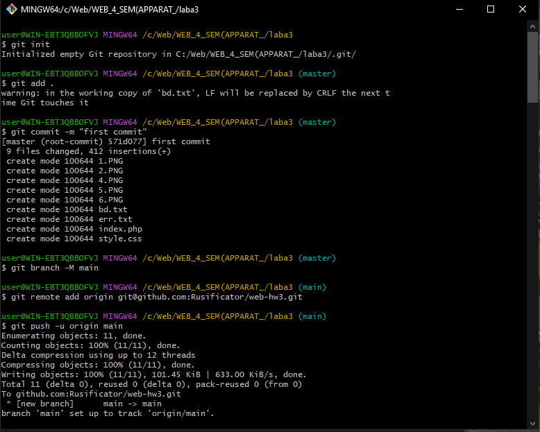
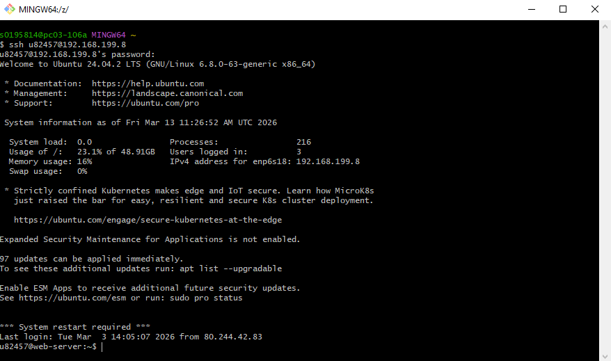
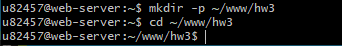
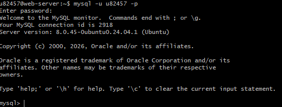
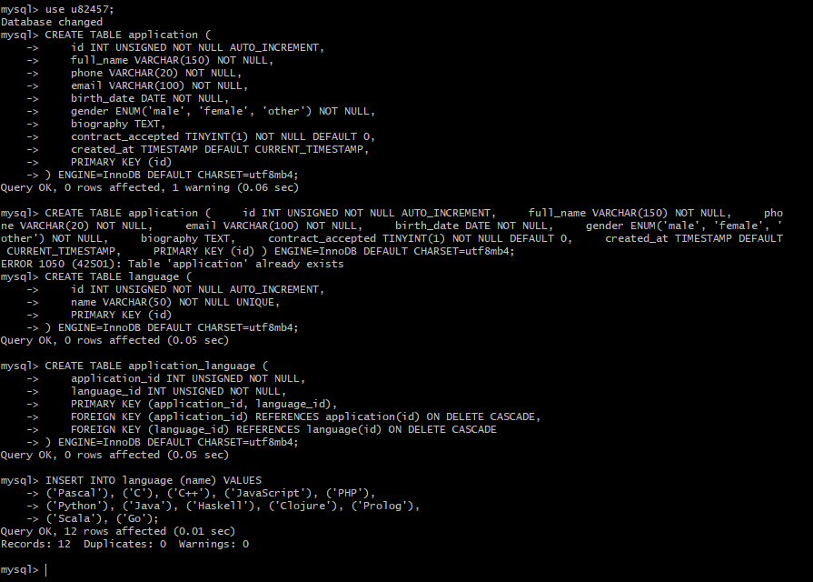
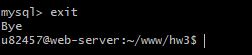
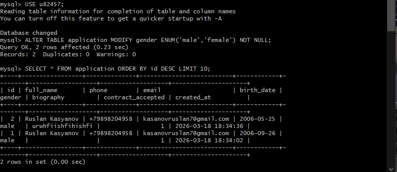

На локальном компьютере создан репозиторий, добавлены файлы (скриншоты, index.php, style.css, bd.txt, err.txt) и выполнена отправка на GitHub.

Скриншот 0: Инициализация Git и push
Через SSH выполнен вход на сервер 192.168.199.8 под логином u82457.

Скриншот 1: Подключение к серверу
В домашней директории создан каталог ~/www/hw3, в который будут помещены файлы лабораторной работы.

Скриншот 2: Создание каталога hw3
Запущен клиент MySQL для создания таблиц. Использована команда mysql -u u82457 -p.

Скриншот 4: Вход в MySQL
Созданы три таблицы: application, language, application_language – в соответствии с 3-й нормальной формой. Затем таблица language заполнена списком языков из задания.

Скриншот 5: Создание таблиц и вставка языков
После завершения работы с базой данных выполнен выход из клиента MySQL.

Скриншот 6: Выход из MySQL
Затем выполнена выборка последних записей из таблицы application для проверки успешного сохранения данных. Для удобного просмотра всех сохранённых анкет создана отдельная страница: Просмотр сохранённых записей.

Скриншот 7: Изменение структуры и просмотр записей